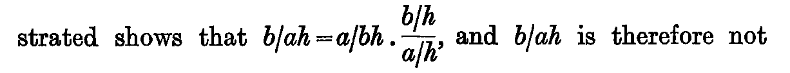
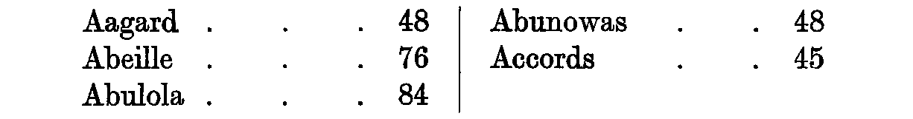

Chapter XXV. Some Problems Arising out of the Discussion of Chance
J. M. Keynes, A Treatise on Probability (London: Macmillan, 1921), first edition, pp. 293–306 (Cornell copy, PDF pp. 313–326). Formula atlas: every ledger row of the chapter beside the printed line it records.
| Ledger rows | 11 |
|---|---|
| Formulas | 4 (display 3, inline 1; items 4, numbered 0) |
| Formulas by Lean status | ✓0 ≈1 ✎0 未3 |
| Notation | 6 (with a Lean counterpart 6) |
| Reference rows | 1 |
Every count on this page is computed from the census ledger, which is built from the page images of the 1921 first edition only (no translation, OCR or e-text is used to count). A formula is an expression containing a relation sign (=, ≠, <, >, ≤, ≥, ≡, ⊃, → and their printed variants, including formulas inside figures, tables and footnotes, and formulas quoted from other authors); a display formula counts one per printed line, so a chain of equalities set over three lines counts three, and an inline formula counts one per expression. A compound expression without a relation sign (such as a/h, g(φ, f) or x1x2…xn/ġh) is counted separately as notation; a bare symbol, even with subscripts, primes or bars, is not counted. Footnote formulas follow the same rule, and a formula reprinted on another page is counted again. The Lean column of a formula row takes one of four values, fixed mechanically: ✓ the printed relation appears as stated in a theorem (only the names of bound variables, Lean notation and the layout of subscripts may differ); ≈ a theorem states an algebraically equivalent form (cleared denominators, a definition substituted, a change of variables); ✎ the printed line is refuted or not derivable, and a corrected form is proved; 未 none of these (a line inside a proof, a definition only, or no counterpart).
ch25-001
- Transcription
a/h- Lean
- Nphase3c/th_14_38_full
- Anchor words
Then- Remarks
- 事象の先験的確率。定理文 (α := b, β := a) の分母
Pr a h(第 3 回で対応に数えた、裁定事項) - Crop
- folio 298, x 125–1335, y 290–340 (full-size scan pixels)
ch25-002
- Transcription
a/bh ;- Lean
- Nphase3c/th_14_38_full
- Anchor words
very small in comparison with- Remarks
- 定理文の
Pr a (b ∧ h) - Crop
- folio 298, x 125–1335, y 290–340 (full-size scan pixels)
ch25-003
- Transcription
b/ah,- Lean
- Nphase3c/th_14_38_full
- Anchor words
we require- Remarks
- 求める確率 (事象の後の行為者の存在)。定理文の左辺
Pr b (a ∧ h) - Crop
- folio 298, x 125–1335, y 340–391 (full-size scan pixels)
ch25-004

- Transcription
b/ah = a/bh . (b/h)/(a/h),- Lean
- ≈phase3c/th_14_38_full
- Anchor words
already demonstrated shows that- Remarks
- 逆確率原理 (第14章 (38))。α := b, β := a で
Pr b (a ∧ h) = Pr a (b ∧ h) * Pr b h / Pr a h(束縛変数の名前の差は許す)。≈ の理由: 印刷は右端の横線分数 (分子b/h、分母a/h) を一つの因子としてX . (Y/Z)と組むが、定理文は(X * Y) / Zで結合が違う (裁定事項)。同名の写し phase3d, phase5, phase6a, phase7b; 内包担体版 phase6c/th_14_38_full_i (同形); 基本形 phase3a/th_14_38_b。ドットは積。行内だが分数のため行間が広い - Crop
- folio 298, x 125–1335, y 441–548 (full-size scan pixels)
ch25-005
- Transcription
b/ah- Lean
- Nphase3c/th_14_38_full
- Reprint of
- ch25-003
- Anchor words
is therefore not determinate- Remarks
- 定理文の
Pr b (a ∧ h) - Crop
- folio 298, x 125–1335, y 441–548 (full-size scan pixels)
ch25-006
- Transcription
a/bh- Lean
- Nphase3c/th_14_38_full
- Reprint of
- ch25-002
- Anchor words
determinate in terms of- Remarks
- 定理文の
Pr a (b ∧ h) - Crop
- folio 298, x 125–1335, y 548–599 (full-size scan pixels)
ch25-007
- Transcription
a/h- Lean
- Nphase3c/th_14_38_full
- Reprint of
- ch25-001
- Anchor words
alone. Thus we cannot(直後)- Remarks
- 定理文の
Pr a h - Crop
- folio 298, x 125–1335, y 548–599 (full-size scan pixels)
ch25-008
- Transcription
3·48 = ²√12- Lean
- 未
- Quoted from
- Playfair
- Anchor words
Diamond- Remarks
- Lyon Playfair の比重の表 1 行目。小数点は中点、根号指数 2 は √ の左上に小字 (原寸で確認)。「approximately」と続く。近似等式を式に数える (裁定事項)。既存の Lean に対応なし
- Crop
- folio 305, x 125–1335, y 330–397 (full-size scan pixels)
ch25-009
- Transcription
2·29 = ³√12- Lean
- 未
- Quoted from
- Playfair
- Anchor words
Graphite- Remarks
- 同表 2 行目。既存の Lean に対応なし
- Crop
- folio 305, x 125–1335, y 397–463 (full-size scan pixels)
ch25-010
- Transcription
1·88 = ⁴√12- Lean
- 未
- Quoted from
- Playfair
- Anchor words
Charcoal- Remarks
- 同表 3 行目。直後
approximately, the atomic weight of carbon being 12.。既存の Lean に対応なし - Crop
- folio 305, x 125–1335, y 463–530 (full-size scan pixels)
ch25-011

- Transcription
Aagard . . . 48 / Abeille . . . 76 / Abulola . . . 84 ‖ Abunowas . . . 48 / Accords . . . 45- Lean
- R未
- Quoted from
- Peirce
- Anchor words
with their ages at death :- Remarks
- Peirce の詩人 5 人の享年表 (2 段組、印刷 3 行、縦罫で区切る)。数値のみで演算子・関係記号なし。式にも記法にも数えない (数えるなら記法 5 本、裁定事項)。出典 Peirce, *A Theory of Probable Inference* (脚注 1)
- Crop
- folio 304, x 125–1335, y 1440–1602 (full-size scan pixels)